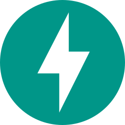

Adaptive Cadence
Cross the material-change threshold and the scan interval tightens to a quarter of the base. Clean runs then gradually relax it back to baseline.
Self-hosted · nine detection layers · fused risk
Wardress freezes a trusted baseline of your site — its DOM, its network references, its pixels, its meaning — then watches for defacements, script injections, metadata tampering, and domain hijacking. Nine independent layers, one calibrated risk score, entirely on your own infrastructure.
 ·
·

· ·
·
 ·
·
 ·
·
 ·
·
 ·
·
 ·
·
·
·
·
·
 ·
·
 ·
·
 ·
·
·
·
 ·
·
 ·
·
 ·
·
·
·
·
·
The problem with page monitors
Naïve monitors flag every rotating banner and A/B test, then go quiet when it matters. Wardress separates noise from compromise by asking nine orthogonal questions about every scan — bytes, structure, links, pixels, language, headers, certificates, cloaking, and meaning — and fusing the answers with a calibrated model instead of a brittle threshold.
The detection engine
Each scan runs eight specialized analyzers in parallel, then fuses their verdicts into a single calibrated risk score.
SHA-256 over normalized HTML. The gate — identical bytes skip the rest.
layer1_hashTree depth, element counts, injected scripts and iframes, forced-hidden nodes.
layer2_dom_structureNew external links, stylesheets, scripts, and form targets — the exfiltration fingerprint.
layer3_link_auditSSIM plus pHash and dHash on masked captures. Sees the defacement as pixels.
layer4_visual_diffDefacement keywords, profanity spikes, and Latin-to-Cyrillic script shifts.
layer5_signaturesTLS certs, HSTS, CSP, CORS, and robots.txt. Runs every scan to catch MITM.
layer6_security_metadataRotates User-Agents to expose content served only to crawlers, not visitors.
layer7_cloakingLocal MiniLM-L6-v2 embeddings measure meaning drift from the baseline.
layer8_semanticsSystem architecture
One codebase, separate containers, coordinated by Docker Compose. The API and the workers talk only through PostgreSQL for durable state and Redis for the task broker — so a slow scan never blocks a request, and a broken webhook never blocks a scan.
Beyond detection
Cross the material-change threshold and the scan interval tightens to a quarter of the base. Clean runs then gradually relax it back to baseline.
Outbound webhooks trigger rollback or maintenance pages. Hooks park in a confirmation queue with a 20s timeout so a broken endpoint never blocks scans.
Generates plain-English incident summaries of DOM changes, visual deltas, and metadata via Gemini or a local Ollama model, cached directly on the scan row.
Hardened by default
Wardress reaches out to untrusted sites on your behalf, so it treats every fetch as hostile and every secret as sensitive.
Targets must resolve to public IPs; loopback, private, and link-local ranges are blocked unless allow_private_networks is set per site. Redirects are validated hop-by-hop to defeat open-redirect and DNS-rebinding bypasses.
The regex-based suppression engine enforces a hard 2.0s match timeout (_REGEX_TIMEOUT_SECONDS), so a crafted pattern can never pin a worker with catastrophic backtracking.
SMTP passwords, Telegram tokens, API keys, and Apprise URLs are encrypted with a CREDENTIALS_ENCRYPTION_KEY Fernet key and never exposed through the API.
API tokens use a wk_ prefix, are shown once, and are stored only as cryptographic hashes. Every endpoint enforces Admin / Analyst / Viewer roles server-side.
Strict role enforcement across every endpoint.
| Permission | Admin | Analyst | Viewer |
|---|---|---|---|
| Read sites, scans, alerts, health & PDF reports | ✓ | ✓ | ✓ |
| Add/modify sites, run scans, rebaseline, suppression rules | ✓ | ✓ | — |
| Acknowledge alerts & handle remediation queue | ✓ | ✓ | — |
| Manage personal API keys | ✓ | ✓ | ✓ |
| System settings, SMTP & AI integrations | ✓ | — | — |
| Create or modify remediation webhooks | ✓ | — | — |
| User management & audit-log inspection | ✓ | — | — |
Quick start
Automated PowerShell installers for Windows hosts running Docker Desktop with the WSL 2 backend. The installer generates cryptographically random secrets and brings the whole stack up for you.
Invoke-WebRequest -Uri "https://github.com/Ns81000/WARDRESS/archive/refs/heads/main.zip" -OutFile "wardress.zip"; Expand-Archive "wardress.zip" -DestinationPath "."; cd WARDRESS-main; powershell -ExecutionPolicy Bypass -File scripts\install.ps1git clone https://github.com/Ns81000/WARDRESS.git; cd WARDRESS; powershell -ExecutionPolicy Bypass -File scripts\install.ps1Confirms the Docker engine and Compose plugin are running.
Parses .env.example and writes .env with random secrets.
Builds and starts Postgres, Redis, the API, and the workers.
Runs Alembic migrations, then watches /api/health/live for 120s.
Default dashboard at http://localhost:8321 · full guide in the
documentation.
Under the hood
Python 3.12CeleryPostgreSQL 16Redisscikit-learnReact 19ViteTailwind v4GeminiOllamaDiscordSlackGmailDeploy Wardress on your own host in one command and let nine layers keep your site honest.